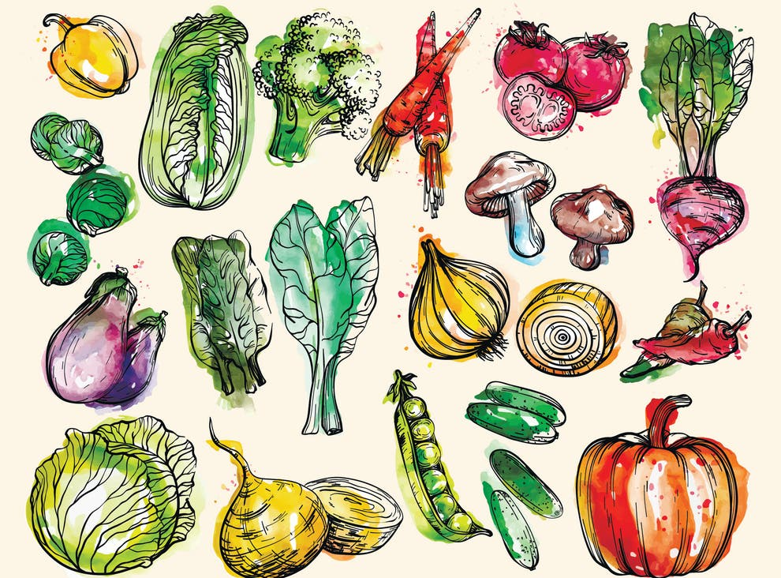

<!-- With html only, no css, no js, and no php, creat a webpage that displays a body with heading and paragraph. -->
<!-- add html tag with languge attribute English -->
<html lang="en"></html>
  <head>
    <title>Home</title>
  </head>
  <body>
    <h1>Welcome to Veggie Meals</h1>
    <p>
      This is a website where you can find cooking guides for different dishes.
    </p>
    <!-- add an image 500 by 300 pixels centered in a grey box and title attribute "colorful vegeterian foods" -->
    
    <!-- add heading2 -->
    <h2>Observing</h2>
    <p>
      -Colors -Textures -Senses -Layering -Geometries -Doshic Effect -Order of
      preparation vs. hardiness vs. vs cut cut as shape
    </p>
    <!-- add heading -->
    <h2>Understanding</h2>
    <p>
      Understanding how the above principles interact. Vegetables, mushrooms,
      herbs, and spices display a unique behavior at each stage: starting with
      the first cut, tear, or whole, following with the cooking stage to end in
      the last stage of ingestion and digestion.
    </p>
    <h2>The Different Types of Vegetable Cutting Styles</h2>
    <p>
      Brunoise (Fine Dice) This particular technique will allow you to fine
      diced vegetables and fruit. ... Chiffonade (Shredding) ... Julienne (Match
      Stick Cuts) ... Macedoine (Large Dice) ... Slicing. ... Mincing. ...
      Roll-Cutting. ... Parallel Cutting.
    </p>
    <h2>The Different Types of Vegetable Cooking Styles</h2>
    <p>
      Baked, broiled, grilled, sauteed, stir-fried, poached, braised, fried,
      steamed, sauted, and braised.
    </p>
    <!-- add style attribute: small brown grey text centered in a box with a border of 1px solid grey -->
    <div
      style="
        border: 1px solid grey;
        border-radius: 5px;
        padding: 10px;
        background-color: #fcf6e6;
        /* center content */
        text-align: justify;
      "
      title="www.hopkinsmedicine.org"
    >
      <p>
        "What is Ayurveda? Ayurveda, a natural system of medicine, originated in
        India more than 3,000 years ago. The term Ayurveda is derived from the
        Sanskrit words ayur (life) and veda (science or knowledge). Thus,
        Ayurveda translates to knowledge of life. Based on the idea that disease
        is due to an imbalance or stress in a person's consciousness, Ayurveda
        encourages certain lifestyle interventions and natural therapies to
        regain a balance between the body, mind, spirit, and the environment."
        <!-- add link to reference website        -->
        <a
          href="https://www.hopkinsmedicine.org/health/wellness-and-prevention/ayurveda"
        >
          Ayurveda by John Hopkins Medicine
        </a>
      </p>
    </div>
    <h2>
      Recipes According to Three None Static Bodily Constitutions or Doshas
    </h2>
    <p>Find a wide variety of fresh and healthy meals to choose from.</p>
    <!-- add html links to the different recipes -->
    <a href="veggie-recipes.php">Veggie & Fruits Recipes</a>
    <a href="leaves-recipes.php">Choys, Leaves, Cabbages, Sprouts Recipes</a>
    <a href="mushrooms-recipes.php">Mushrooms Recipes</a>
    <a href="spice-recipes.php">Spices, Herbs & Nuts Recipes</a>
    <!-- add a grey color box to center an image of a plant with a title attribute "vegetable" -->
    <div
      style="
        border: none;
        border-radius: 5px;
        padding: 10px;
        background-color: #fdf6e6;
        /* center content */
        text-align: center;
        /* add size but float in center */
        height: 300px;
      "
      title="vegetable"
    >
        
    </div>
    <h2>References</h2>
    <p>
      <a
        href="https://www.woodcuttingboards.com/news/the-different-types-of-vegetable-cutting-styles-170.aspx"
        >Vegetable Cutting Styles</a
      >
    </p>
  </body>
</html>
